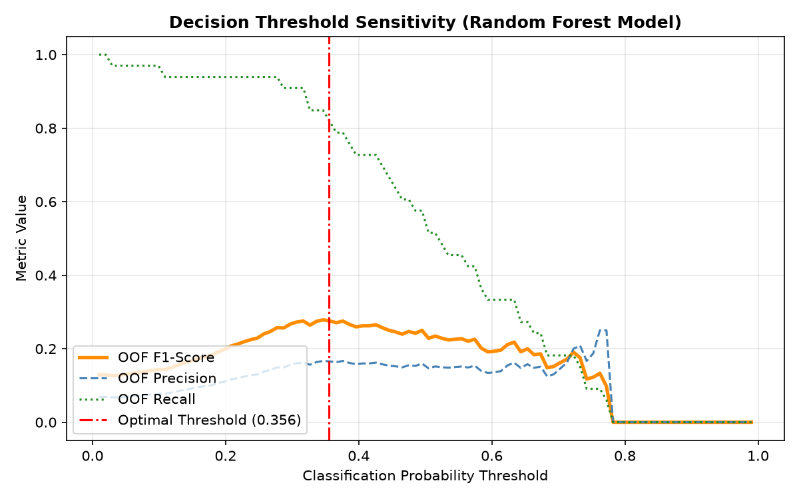
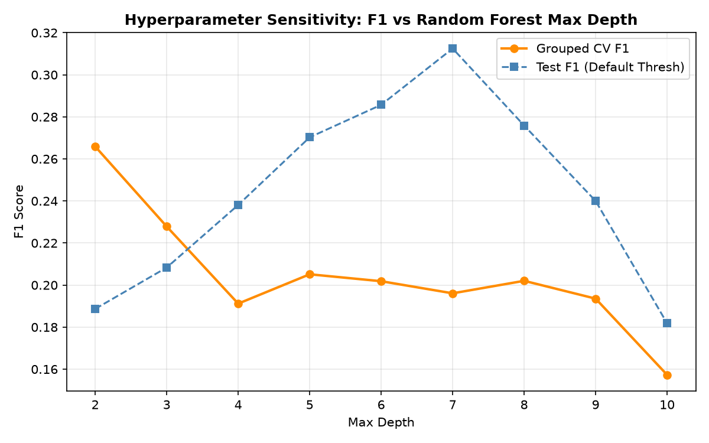
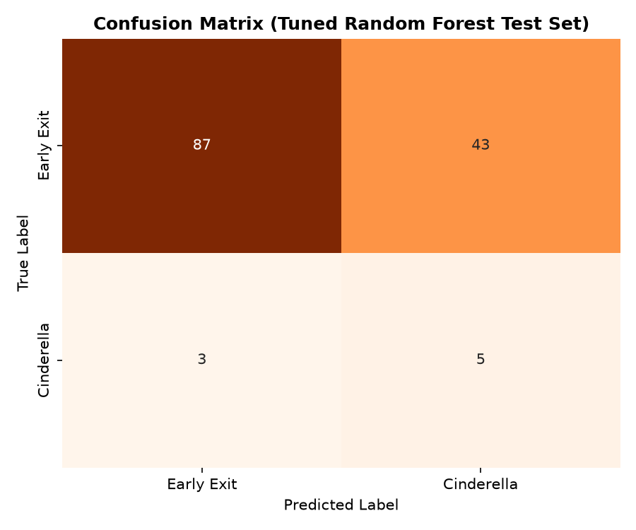

Project Overview
In NCAA tournament lore, a Cinderella is a low-seeded team (seed 11–16) that defies odds to reach the Sweet 16 or further (requiring ≥2 wins). Historically, these upsets are treated as random chaos. We frame Cinderella prediction as a binary anomaly-detection problem, testing the hypothesis that team play-style profiles (tempo, three-point volume, effective FG%) carry predictive signals beyond public KenPom efficiency rankings.
To keep evaluation grounded, we enforce a strict chronological split (2003–2021 train, 2022–2026 test), apply SMOTE and scaling strictly inside CV folds to prevent data leakage, and establish a KenPom-only baseline.
Team Metric Adjuster
Tweak the team's regular-season statistical profile and observe the predictions change in real-time.
Model Probabilities
Evaluating 5 distinct classifiers simultaneously based on adjusted metrics.
Calculated Latent Style Factors
Projecting play-style metrics into 3 principal components (PCA) in real-time.
Calculated component...
Calculated component...
Calculated component...
Model Performance & Diagnostics
The classifiers are evaluated on held-out tournament seasons (2022–2026). Below is the comprehensive performance comparison against the baseline and diagnostic charts proving generalization.
| Model Name | Test F1-Score | Test Precision | Test Recall | Optimized Decision Threshold |
|---|---|---|---|---|
| Baseline (KenPom Rank Only) | 0.0870 | 0.0667 | 0.1250 | 0.717 |
| Logistic Regression (Full features) | 0.2128 | 0.1282 | 0.6250 | 0.597 |
| PCA + Logistic Regression ⭐ | 0.2500 | 0.1562 | 0.6250 | 0.696 |
| Gradient Boosting Classifier | 0.2381 | 0.1471 | 0.6250 | 0.442 |
| Random Forest Classifier (Tuned) | 0.1786 | 0.1042 | 0.6250 | 0.356 |
Diagnostic Visualizations
1. Decision Threshold Sensitivity

Sweeping probability threshold on Out-Of-Fold (OOF) training data to maximize F1-score without test set leakage. Optimal threshold found at 0.356.
2. Parameter Sensitivity (Max Depth)

Evaluating Grouped CV F1 vs. Test F1 across tree depths. Peak performance at max depth = 3 restricts tree capacity, preventing SMOTE overfitting.
3. Test Set Confusion Matrix

Confusion matrix on 2022–2026 test years. Out of 138 low-seeded seasons, the model correctly isolates 5 of the 8 extremely rare Cinderella runs.
PCA Play-Style Loadings (Latent Factor Matrix)
To address high-dimensionality, we apply PCA to the 13 regular-season play-style features. Below are the coefficients (loadings) for the first 3 Principal Components:
| Feature Name | PC1 (Overall Quality) | PC2 (Pace & Perimeter) | PC3 (Possession security) |
|---|
Interactive Case Studies
Click a team to load its actual regular-season metrics into the Sandbox Adjuster above and examine what made them anomalies:
Reproducibility & Deployment Instructions
1. How to Reproduce Locally
To train the models and regenerate all figures/weights, execute the following commands in the project directory:
# Install dependencies
pip install -r requirements.txt
# Run unified training pipeline
python train_models_all.pyThis will update the javascript weights file (model-data.js) and recreate the sensitivity plots.
2. How to Deploy to Vercel
This application is 100% serverless and static. To deploy it to Vercel:
- Commit all files (including
model-data.jsand png plots) to a GitHub repository. - Go to Vercel, click "Add New Project", and select your repo.
- Leave all build settings at their defaults and click Deploy.
- Done! Vercel will serve it as a lightning-fast static site.